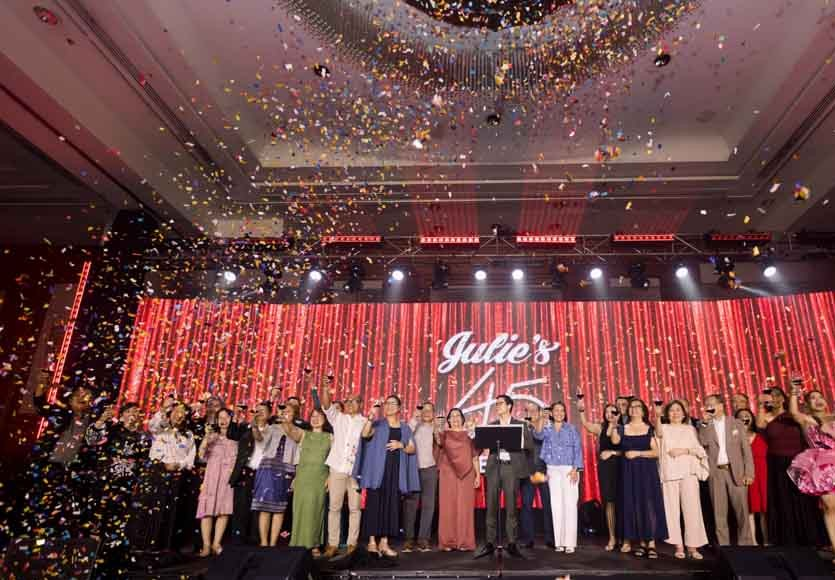
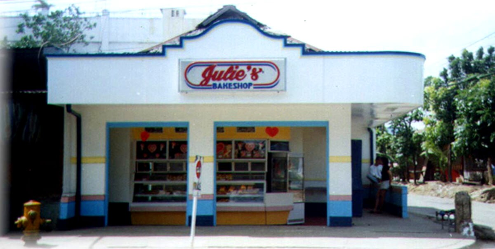
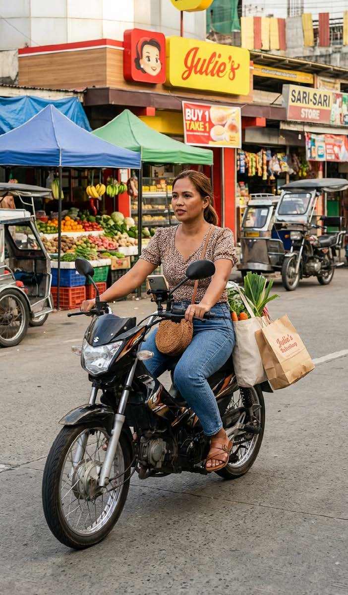
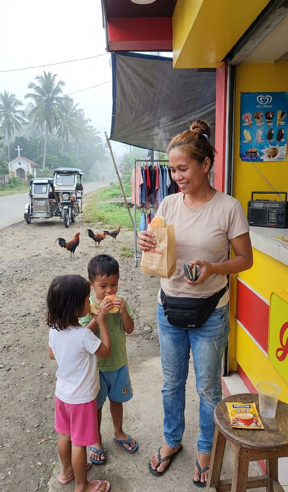

45th Anniversary Celebration · 2026
 ✕
✕
Seven
Foundations.
Before we build the refresh — the decisions everything else stands on.
For the Board · the CEO · Regional Partners — June 2026

The First Store · Mandaue, 1981 — the original red & blue
01

Foundation 01 · Klasiko, Ngayon
Bring back the blue.
The classic red-and-blue, reclaimed as the color foundation. Strategy, not nostalgia.
Red and yellow is the crowded code of fast food. Red and blue belongs to the country's most trusted institutions — and the flag. No bakery competitor owns it. It's Julie's to take back.
Sign-off meansRed-and-blue leads the new palette; exact heritage values come from your 2021 source files.

JulieUrban

JoyThe Bridge

AnnaRural
05
Foundation 05 · The Audience
One audience, one bridge.
Speak to Joy — reach Julie and Anna at once. One voice, one campaign, the whole country.